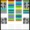

LoopBe 
Unlike the analogs working in Java and (or) in Flash,uses Jazz-Plugin, providing support of MIDI in the browser, and generates MIDI messages on the 10th channel by means of Javascript-engine. For comfortable work with Paradiddles system it is recommended to install Yamaha S-YXG50 (for Windows XP), VirtualMIDISynth (for all versions of Windows) The virtual midi-cable is necessary for record of MIDI files or connection to VST-host, DAW (LoopBe, MIDI Yoke, VMC). The listed drivers will appear in MIDI Out:
В отличие от аналогов,работающих на Java и(или) на Flash, использует Jazz-Plugin,обеспечивающий поддержку MIDI в браузере, и генерирует MIDI на 10-м канале при помощи Javascript-движка. Для комфортной работы с Paradiddles system рекомендуется установить Yamaha S-YXG50 (для Windows XP) , VirtualMIDISynth (для всех версий Windows) Для записи MIDI-файлов или подключения к VST-host, DAW необходим виртуальный миди-кабель (LoopBe,MIDI Yoke,VMC). Перечисленные драйверы появятся в MIDI Out:
Paradiddles system is a classification of a fingerings, orders their variety and simplifies their studying. Unlike the "live" drummers ground under a favourite fingering, uses all arsenal. As iceberg and its top. In total in a 8-submultiple step measure are possible 7 "rings" (are designated by 7 flowers. together with addresses - 46 patterns, 23 with right and 23 from the left hand (foot). They are called "rings" since at cyclic performance begin with the same hand or a foot), and 11 "bracelets" (continuing "jeweler" analogy), 22 patterns, at cyclic performance beginning with an opposite hand, differently inevitably there is a series of the 3 or 4 strokes of the same hand (foot) that in the theory contradicts definition of a paradiddle as alternations of a single and the double strokes, and in practice does very difficult playing the 16th at rates above "hamp".
Paradiddles system - это классификация аппликатур, приводит в порядок их разнообразие и упрощает их изучение. В отличие от "живых" барабанщиков,заточенных под любимые аппликатуры,использует весь арсенал. Как айсберг и его вершина.Всего в 8-дольном такте возможны 7 "колец" (обозначены 7-ю цветами. вместе с обращениями - 46 паттернов, 23 с правой и 23 с левой руки (ноги). "Кольцами" они названы ,т.к. при циклическом исполнении начинаются c той же руки или ноги) ,а еще 11 "браслетов" (продолжая "ювелирную" аналогию), 22 паттерна ,при циклическом исполнении начинающихся с противоположной руки ,иначе неизбежно возникает серия из 3-х или 4-х ударов той же руки(ноги),что в теории противоречит определению парадидла,как чередования одиночных и дубль-ударов ,а на практике делает весьма непростым исполнение 16-тыми в темпах выше "хампа".
How to add an instrument to the set? Double-click on the upper left arm slider, you can add up to 8 different instruments, bottom - two different instruments,that can be positioned as desired by clicking and dragging. After the page loads Randomize button is not active, only after the formation of set you can press it. To remove the instrument from the set, you should double click on the ellipse of the instrument.
Как добавить инструмент в сет?
Двойным кликом на левой рукоятке верхнего слайдера можно добавить до 8 разных инструментов,
нижнего - один или два разных инструментов,например Pedal Hi-Hat и Bass Drum.
Появившиеся инструменты можно расположить желаемым
образом,перетаскивая.
При загрузке
страницы кнопка Randomize не активна , лишь после формирования сета можно ее нажать.
Удалить инструмент из сета можно двойным кликом на эллипсе удаляемого инструмента.
Sequencer with storage in the Local Storage, playback by the order (Count) and in random mode (Random) Press the Save button to record, Sequence button to play.
Секвенсор с хранением в Local Storage,воспроизведение по порядку (Count) и в случайном режиме (Random) Нажатием кнопки Save проиводится запись,Sequence - воспроизведение.